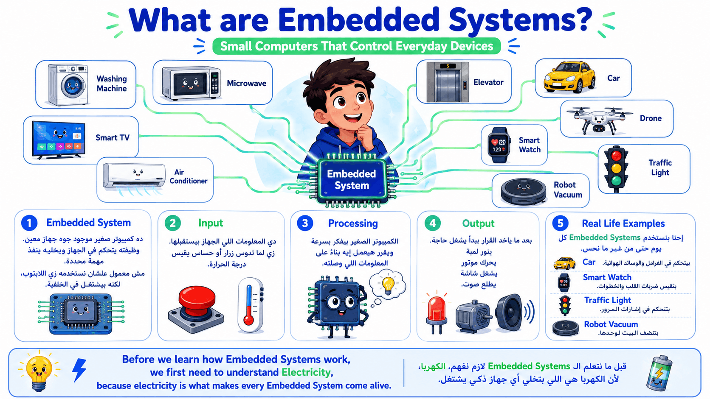
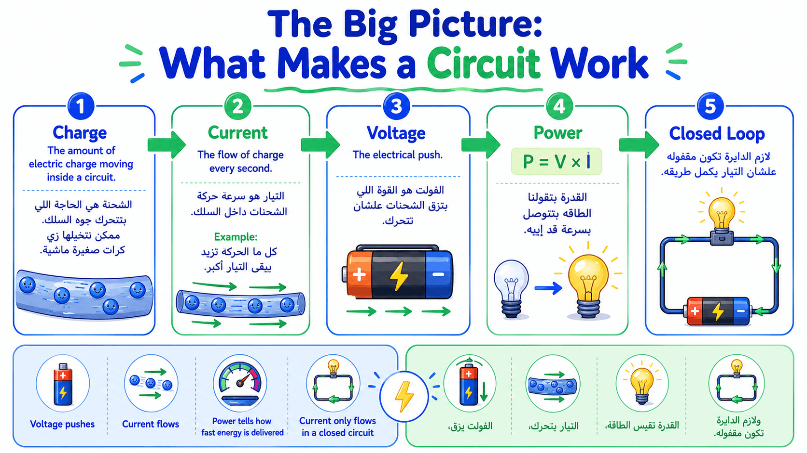
"🚀 قبل ما نبدأ السلايد دي، عايز أسألكم سؤال...
لو جبت عربية ريموت كنترول، أو روبوت صغير، أو حتى مروحة كهربائية... إيه الحاجة المشتركة بينهم كلهم؟
كلهم بيحتاجوا كهربا علشان يشتغلوا.
طيب إحنا داخلين Embedded Systems... ليه بنتعلم كهربا الأول؟
لأن الـ Embedded System في الآخر هو جهاز ذكي، لكن الجهاز ده بيحتوي على إلكترونيات وكهربا وسنسورات وبرمجة.
يعني المبرمج في المجال ده مش بيكتب كود وبس، ده الكود بتاعه بيتعامل مع كهربا حقيقية.
ولو مش فاهم الكهربا ماشية إزاي، مش هتعرف ليه الـ LED نورت، أو الموتور وقف، أو السنسور قرأ قيمة غلط.
عشان كده النهارده هنفهم أهم خمس كلمات في الكهربا، ولو فهمناهم هنفهم أي دائرة كهربائية بعد كده."
الترجمة: الشحنة الكهربائية
الشرح:
تخيل إن عندك مجموعة كور صغيرة جدًا بتتحرك داخل أنبوبة.
كل كورة تعتبر جزء صغير من اللي بنسميه شحنة كهربائية.
كل الكهرباء اللي حوالينا عبارة عن شحنات صغيرة جدًا بتتحرك داخل الأسلاك.
كل ما عدد الشحنات يزيد، يبقى كمية الكهرباء أكبر.
أمثلة
🏠 المثال الأول (من الحياة اليومية)
تخيل إن معاك عربية ألعاب فيها 100 كرة صغيرة، وكل مرة بتنقل الكرات من صندوق للتاني. الكرات دي هي الشحنات اللي بتتحرك.
🤖 المثال الثاني (تكنولوجيا أو ذكاء اصطناعي)
لما البطارية تشغل روبوت صغير، ملايين ومليارات الشحنات الكهربائية بتتحرك داخل الأسلاك علشان توصل الطاقة لكل جزء في الروبوت.
➡️ الانتقال
طيب الشحنات دي بتتحرك إزاي؟ هنا ييجي مفهوم التيار.
الترجمة: التيار الكهربائي
الشرح:
التيار هو عدد الشحنات اللي بتعدي في السلك كل ثانية.
يعني مش بنقيس كمية الشحنات كلها، لكن بنقيس سرعة مرورها.
كل ما التيار يزيد، كمية الكهرباء اللي ماشية في السلك كل ثانية تزيد.
أمثلة
🏠 المثال الأول (من الحياة اليومية)
تخيل باب المدرسة. لو كل ثانية دخل 5 طلبة يبقى الحركة بطيئة، لكن لو دخل 100 طالب في الثانية يبقى في تيار كبير من الطلبة.
🤖 المثال الثاني (تكنولوجيا أو ذكاء اصطناعي)
لو الموتور في عربية روبوت محتاج تيار أكبر، البطارية لازم تبعت عدد أكبر من الشحنات كل ثانية علشان الموتور يلف.
➡️ الانتقال
لكن إيه اللي بيخلي الشحنات تتحرك أصلاً؟
الترجمة: الجهد الكهربائي
الشرح:
الجهد هو القوة أو الدفع اللي بيزق الشحنات تتحرك.
من غير جهد، الشحنات هتفضل واقفة مكانها.
عشان كده البطارية وظيفتها الأساسية إنها تعمل فرق جهد يخلي الكهرباء تتحرك.
أمثلة
🏠 المثال الأول (من الحياة اليومية)
تخيل إنك واقف على زحليقة. لو الزحليقة عالية جدًا، هتنزل بسرعة بسبب قوة الدفع. كل ما الارتفاع يزيد، الدفع يزيد.
🤖 المثال الثاني (تكنولوجيا أو ذكاء اصطناعي)
بطارية 9V بتدي دفع أكبر من بطارية 1.5V، علشان كده بعض الأجهزة تحتاج بطاريات بجهد أعلى.
➡️ الانتقال
بعد ما عرفنا الدفع، محتاجين نعرف الطاقة اللي بتوصل للجهاز.
الترجمة: القدرة الكهربائية
الشرح:
القدرة معناها الجهاز بيستهلك أو يستقبل طاقة قد إيه كل ثانية.
يعني مش مجرد الكهرباء ماشية، لكن قد إيه طاقة وصلت فعلاً.
أمثلة
🏠 المثال الأول (من الحياة اليومية)
لمبة صغيرة ولمبة كبيرة الاتنين بينوروا، لكن الكبيرة بتستهلك طاقة أكتر فبتبقى أقوى في الإضاءة.
🤖 المثال الثاني (تكنولوجيا أو ذكاء اصطناعي)
موتور روبوت صغير يستهلك قدرة أقل من موتور درون كبير، لأن الدرون محتاج طاقة أكبر علشان يطير.
➡️ الانتقال
لكن كل ده مش هيحصل لو الدائرة مش مقفولة.
الترجمة: الدائرة المغلقة
الشرح:
الكهربا لازم يكون ليها طريق كامل تخرج من البطارية وترجع لها تاني.
لو السلك اتقطع، الكهرباء هتقف فورًا.
أمثلة
🏠 المثال الأول (من الحياة اليومية)
تخيل سباق جري في مضمار دائري. لو المضمار اتقطع في حتة، العدائين هيقفوا ومش هيعرفوا يكملوا.
🤖 المثال الثاني (تكنولوجيا أو ذكاء اصطناعي)
لما تفتح مفتاح الروبوت، الدائرة تكتمل فيشتغل. ولما تطفيه، الدائرة تتفتح فيقف فورًا.
"لو البطارية موجودة لكن في سلك مقطوع... هل اللمبة هتنور؟ وليه؟"
https://chatgpt.com/s/m_6a5e82bd345c8191b927653920108646
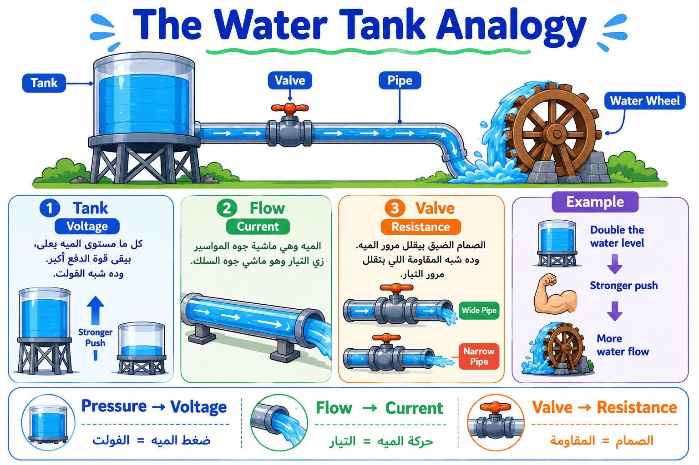
"💧 الكهربا مش بنشوفها بعيننا، فالعلماء استخدموا مثال بسيط جدًا يساعدنا نتخيلها.
تخيل عندنا تانك مياه فوق سطح البيت.
الميه بتنزل في المواسير بسبب فرق الارتفاع.
الكهربا بتعمل نفس الفكرة تقريبًا.
المياه = الشحنات.
سريان المياه = التيار.
ضغط المياه = الجهد.
ولو المواسير ضيقة، المياه تمشي بصعوبة، وده زي المقاومة.
المثال ده هيساعدكم في كل درس كهربا بعد كده."
الترجمة: تشبيه خزان المياه
الشرح:
هو تشبيه بنستخدمه علشان نفهم الكهرباء باستخدام حاجة إحنا بنشوفها كل يوم وهي حركة المياه.
لأن الكهرباء نفسها مش بنشوفها، لكن بنشوف تأثيرها.
أمثلة
🏠 المثال الأول (من الحياة اليومية)
لما تانك المياه يبقى مليان، المياه تنزل بقوة في الحنفية.
🤖 المثال الثاني (تكنولوجيا أو ذكاء اصطناعي)
المهندسين أحيانًا يشرحوا دوائر الروبوتات للطلاب باستخدام مثال خزان المياه لأنه أسهل من شرح الإلكترونات.
➡️ الانتقال
أول جزء في التشبيه هو ضغط المياه.
الترجمة: ضغط المياه (يشبه الجهد)
الشرح:
كل ما مستوى المياه يعلى، الضغط يزيد.
ونفس الفكرة في البطارية، كل ما الجهد أعلى، الدفع أكبر.
أمثلة
🏠 المثال الأول (من الحياة اليومية)
لو عندك تانكين، واحد فوق العمارة وواحد في الدور الأرضي، المياه من اللي فوق هتنزل بقوة أكبر.
🤖 المثال الثاني (تكنولوجيا أو ذكاء اصطناعي)
بطارية أكبر جهدًا تقدر تشغل بعض الأجهزة اللي البطارية الصغيرة متعرفش تشغلها.
الترجمة: تدفق المياه (يشبه التيار)
الشرح:
المياه اللي ماشية في المواسير تشبه الشحنات اللي ماشية في السلك.
كل ما التدفق يزيد، التيار يزيد.
أمثلة
🏠 المثال الأول (من الحياة اليومية)
لما تفتح الحنفية على الآخر، كمية المياه اللي خارجة في الثانية تزيد.
🤖 المثال الثاني (تكنولوجيا أو ذكاء اصطناعي)
لما الروبوت يشغل أكتر من موتور في نفس الوقت، كمية التيار المطلوبة تزيد.
الترجمة: الصمام أو الجزء الضيق (يشبه المقاومة)
الشرح:
لو المواسير ضاقت، المياه تمشي بصعوبة.
المقاومة في الدائرة تعمل نفس الفكرة، تقلل مرور التيار وتحمي المكونات.
أمثلة
🏠 المثال الأول (من الحياة اليومية)
لما تدوس بإيدك على خرطوم المياه، المياه تقل لأنها لقت مكان ضيق.
🤖 المثال الثاني (تكنولوجيا أو ذكاء اصطناعي)
المقاومة اللي قبل الـ LED تمنع مرور تيار كبير يحرقه.
"لو كبرنا قطر الماسورة... هل المياه هتمشي أسهل ولا أصعب؟ وإيه الجزء اللي يشبهها في الدائرة الكهربائية؟"
🔌 Slide 3: Circuit Components and
Their Jobs
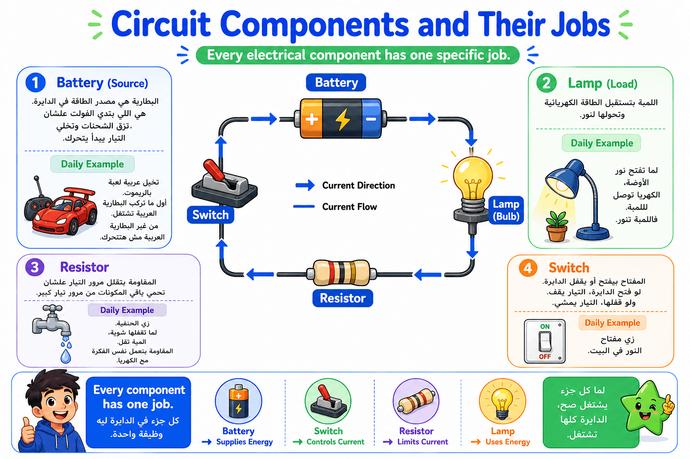
🗣️ Speaker Notes
"😊 دلوقتي بعد ما عرفنا يعني إيه جهد، ويعني إيه
تيار، تعالوا نشوف مين بقى اللي بيشتغل جوه الدائرة الكهربائية.
أي دائرة كهربائية مهما كانت بسيطة أو معقدة، لازم يكون فيها مجموعة مكونات، وكل مكون ليه وظيفة محددة جدًا.
فكروا فيها كأنها فريق كرة قدم... مينفعش كل اللاعبين يبقوا حراس مرمى، صح؟
كل واحد ليه دور.
في الدائرة الكهربائية نفس الفكرة.
في جزء بيولد الطاقة.
وفي جزء بيستخدم الطاقة.
وفي جزء بيحمي الدائرة.
وفي جزء بيتحكم في تشغيلها وإيقافها.
ولما كل واحد يعمل شغله صح، الجهاز كله يشتغل.
وده نفس اللي هيحصل بعد كده في الـ Embedded Systems.
هنلاقي بطارية، وسنسور، وموتور، وميكروكنترولر... وكل واحد ليه وظيفة محددة."
الترجمة: مصدر الطاقة
الشرح:
مصدر الطاقة هو الجزء اللي بيبدأ كل حاجة.
هو اللي يدي الدائرة الجهد الكهربائي علشان الشحنات تبدأ تتحرك.
في أغلب المشاريع هيكون بطارية أو USB أو Adapter.
من غير مصدر طاقة... مفيش أي مكون هيشتغل.
🏠 المثال الأول (من الحياة اليومية)
تخيل إنك في البيت والكهرباء قطعت.
كل الأجهزة موجودة، لكن محدش شغال.
أول ما الكهرباء ترجع، كل حاجة تبدأ تشتغل.
يبقى الكهرباء هي مصدر الطاقة.
🤖 المثال الثاني (تكنولوجيا أو ذكاء اصطناعي)
روبوت صغير في مسابقة روبوتات.
كل البرمجة صح، وكل الأسلاك متوصلة، لكن الطالب نسي يحط البطارية.
الروبوت مش هيتحرك خالص لأن مصدر الطاقة مش موجود.
➡️ الانتقال
بعد ما الطاقة اتولدت... محتاجة تروح لمكون يستخدمها.
الترجمة: الحمل الكهربائي
الشرح:
الحمل هو أي مكون بيستهلك الكهرباء علشان يعمل وظيفة.
يعني ممكن يحول الكهرباء لنور...
أو حركة...
أو صوت...
أو حرارة.
🏠 المثال الأول (من الحياة اليومية)
اللمبة في أوضة النوم.
الكهرباء تدخلها، وهي تحولها لضوء ينور الأوضة.
🤖 المثال الثاني (تكنولوجيا أو ذكاء اصطناعي)
في روبوت، الموتور يعتبر حمل لأنه يحول الكهرباء إلى حركة تخلي العجل يلف.
➡️ الانتقال
طيب... أحيانًا الكهرباء تبقى زيادة عن المطلوب، مين يحمي الدائرة؟
الترجمة: المقاومة
الشرح:
المقاومة زي الشرطي اللي بينظم المرور.
هي تقلل كمية التيار اللي ماشي في السلك علشان المكونات متتحرقش.
في مشاريع الـ Embedded Systems هتستخدموا المقاومة مع الـ LED تقريبًا في كل مشروع.
🏠 المثال الأول (من الحياة اليومية)
تخيل طريق سريع فيه مطب.
المطب هيخلي العربيات تهدي.
المقاومة بتعمل نفس الفكرة للكهرباء.
🤖 المثال الثاني (تكنولوجيا أو ذكاء اصطناعي)
طالب وصل LED مباشرة بالبطارية من غير مقاومة.
الـ LED نور ثانية واحدة وبعدها اتحرق لأن التيار كان كبير جدًا.
➡️ الانتقال
طيب لو أنا عايز أشغل أو أطفي الدائرة بإيدي؟
الترجمة: المفتاح الكهربائي
الشرح:
المفتاح وظيفته بسيطة جدًا.
يا إما يقفل الطريق فتعدي الكهرباء.
أو يفتح الطريق فتقف الكهرباء.
هو زي الباب.
الباب مفتوح... الناس تعدي.
الباب مقفول... محدش يعدي.
🏠 المثال الأول (من الحياة اليومية)
لما تدوس على مفتاح النور في البيت، اللمبة بتنور أو تطفي في نفس اللحظة.
🤖 المثال الثاني (تكنولوجيا أو ذكاء اصطناعي)
في مشروع روبوت، زر Start يعتبر Switch.
لما الطالب يضغط عليه، الروبوت يبدأ ينفذ البرنامج.
"لو شلت المقاومة من الدائرة وخليت البطارية متوصلة مباشرة بالـ LED... تتوقعوا هيحصل إيه؟ وليه؟"
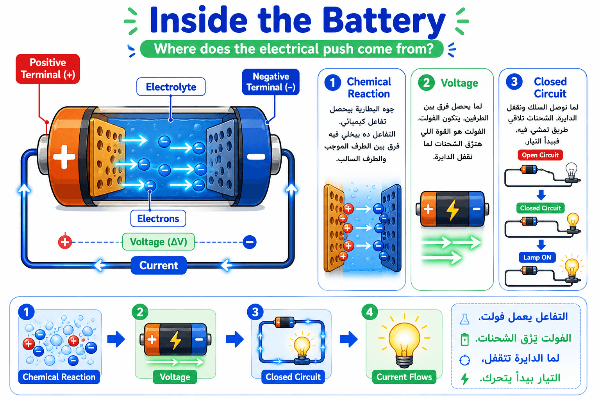
"🔍 في السلايد اللي فاتت قولنا إن البطارية بتدي دفع للكهرباء.
لكن السؤال المهم...
البطارية نفسها جابت الدفع ده منين؟
جوه البطارية بيحصل تفاعل كيميائي.
التفاعل ده بيخلي طرف البطارية يبقى موجب، والطرف التاني يبقى سالب.
الفرق بينهم هو اللي بنسميه الجهد الكهربائي.
لكن خدوا بالكم...
حتى لو البطارية فيها جهد، الكهرباء مش هتمشي إلا لما نقفل الدائرة.
يعني لازم يكون فيه طريق كامل من البطارية ويرجع لها تاني.
وده يخلينا نفهم ليه ساعات بنحط بطارية جديدة في لعبة ولسه اللعبة مش شغالة...
لأن ممكن المفتاح مفتوح أو فيه سلك مفصول."
الترجمة: التفاعل الكيميائي
الشرح:
داخل البطارية توجد مواد كيميائية تتفاعل مع بعضها.
هذا التفاعل هو اللي يصنع فرق الشحنة بين الطرف الموجب والطرف السالب.
يعني البطارية مش بتخزن كهرباء فقط، لكنها بتولد فرق جهد بسبب التفاعل الكيميائي.
🏠 المثال الأول (من الحياة اليومية)
لما تشتري بطارية جديدة للريموت، هي جاهزة للشغل لأن التفاعل الكيميائي موجود بالفعل داخلها.
🤖 المثال الثاني (تكنولوجيا أو ذكاء اصطناعي)
الروبوت في المسابقة يشتغل لساعات، وبعدها البطارية تفضى لأن المواد الكيميائية الموجودة فيها بدأت تخلص.
➡️ الانتقال
والنتيجة الطبيعية للتفاعل ده هي ظهور الجهد.
الترجمة: الجهد الكهربائي
الشرح:
الجهد هو فرق الطاقة بين طرفي البطارية.
وده هو اللي يدفع الشحنات إنها تتحرك بمجرد ما الدائرة تتقفل.
من غير فرق جهد... الشحنات مش هتتحرك.
🏠 المثال الأول (من الحياة اليومية)
تخيل إنك ماسك كرة فوق سطح البيت.
بمجرد ما تسيبها، هتنزل بسبب فرق الارتفاع.
🤖 المثال الثاني (تكنولوجيا أو ذكاء اصطناعي)
بطارية 9V تعطي دفعًا أكبر من بطارية 1.5V، لذلك بعض الدوائر تحتاج جهدًا أعلى لتعمل.
➡️ الانتقال
لكن الجهد وحده لا يكفي... لازم الدائرة تكون مكتملة.
الترجمة: الدائرة الكهربائية المغلقة
الشرح:
الدائرة المغلقة معناها إن الكهرباء لقت طريق كامل تخرج من البطارية وترجع لها مرة تانية.
لو فيه أي قطع في الطريق، الكهرباء هتقف فورًا.
🏠 المثال الأول (من الحياة اليومية)
تخيل قطار بيلف في مسار دائري.
لو جزء من السكة اتشال، القطار هيقف ومش هيكمل.
🤖 المثال الثاني (تكنولوجيا أو ذكاء اصطناعي)
في مشروع Arduino، مجرد سلك واحد مفصول يخلي المشروع كله ميشتغلش رغم إن البطارية سليمة.
"لو البطارية جديدة جدًا، لكن المفتاح مفتوح... هل هيمر تيار؟ ولا لأ؟ وليه؟"
"✨ دلوقتي إحنا بقينا فاهمين الأساسيات اللي أي مهندس Embedded لازم يعرفها.
عرفنا:
البطارية بتولد فرق جهد.
الجهد هو اللي يزق الشحنات.
التيار هو حركة الشحنات.
المقاومة بتنظم وتحمي.
المفتاح يتحكم في مرور الكهرباء.
والدائرة لازم تكون مقفولة علشان أي جهاز يشتغل.
ومن الحصة الجاية هنبدأ نشوف إزاي الـ Microcontroller يستخدم المفاهيم دي علشان يشغل LEDs، ويقرأ Sensors، ويتحكم في Motors.
يعني من هنا هنبدأ ندخل فعليًا عالم الـ Embedded Systems."
📖 Slide 5
https://chatgpt.com/s/m_6a5e8939b7f08191856d07c7564d1bdc
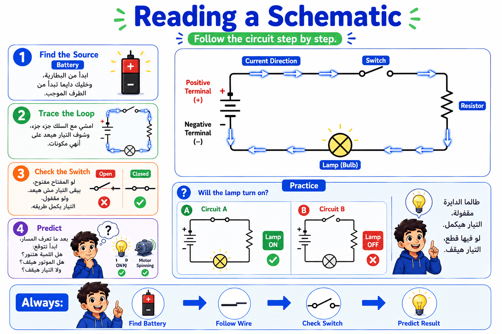
👨🏫
"لحد دلوقتي إحنا اتعلمنا مكونات الدائرة الكهربائية، لكن لو حد إدانا رسم
للدائرة على ورقة، هنفهمه إزاي؟
الرسم ده اسمه Schematic أو المخطط الكهربائي.
وده لغة المهندسين.
أي مهندس في أي دولة في العالم يقدر يبص على الـ Schematic ويفهم الدائرة حتى لو عمره ما شافها قبل كده.
طيب نقرأه إزاي؟
دايمًا بنفس الترتيب."
"أول حاجة ندور على مصدر الكهرباء.
غالبًا هيكون البطارية.
ونبدأ من الطرف الموجب (+).
ليه؟
لأننا بنفترض إن التيار التقليدي بيمشي من الموجب للسالب."
"بعد كده نمشي مع السلك.
نتتبع كل عنصر واحد واحد.
بطارية...
مقاومة...
لمبة...
مفتاح...
لحد ما نرجع تاني للبطارية.
كأننا ماشيين في طريق وممنوع ننط أي جزء."
"قبل ما نتوقع اللي هيحصل لازم نبص على المفتاح.
لو المفتاح مفتوح...
يبقى الطريق مقطوع.
ومفيش تيار هيعدي.
حتى لو البطارية جديدة."
"آخر خطوة نسأل نفسنا...
كل عنصر هيعمل إيه؟
هل اللمبة هتنور؟
هل الموتور هيلف؟
هل في تيار أصلاً؟
وده اللي بيعمله أي مهندس قبل ما يبدأ يبني الدائرة."
"افتكروا القاعدة دي.
ابدأ من البطارية.
امشي مع السلك.
شوف المفتاح.
وبعدين توقع النتيجة."
الترجمة: المخطط الكهربائي
الشرح:
المخطط الكهربائي هو رسم بسيط بيستخدم رموز بدل المكونات الحقيقية علشان يوضح طريقة توصيل الدائرة.
المهندس مش محتاج يرسم البطارية أو اللمبة بشكلها الحقيقي، لكنه يستخدم رمز معروف يفهمه أي شخص.
تخيل إنك رايح بيت صاحبك. بدل ما ترسم كل المباني والشوارع بالتفصيل، بتفتح Google Maps وتشوف خطوط ورموز بسيطة توصلك للمكان. المخطط الكهربائي بيعمل نفس الفكرة.
لما مهندس إلكترونيات يصمم روبوت، بيرسم الأول الـ Schematic علشان يتأكد إن كل المكونات متوصلة صح قبل ما يبدأ في التركيب الحقيقي.
➡️ الانتقال
دلوقتي عرفنا يعني إيه Schematic، تعالوا نشوف الرموز اللي بيتكون منها.
الترجمة: التيار الكهربي
الشرح:
هو حركة الشحنات الكهربائية داخل الدائرة.
تخيل الأطفال بيجروا في ممر المدرسة. طالما الممر مفتوح، الأطفال يقدروا يكملوا المشي. لو حد قفل الباب، الحركة كلها هتقف.
داخل دائرة إلكترونية في لعبة أو روبوت، التيار هو اللي بيوصل الطاقة للموتور أو اللمبة علشان يشتغلوا.
➡️ الانتقال
علشان نقدر نمثل حركة التيار على الورق، لازم نستخدم رموز قياسية.
"لو المفتاح مفتوح...
هل التيار يوصل لنص الدائرة ولا يقف خالص؟ وليه؟"
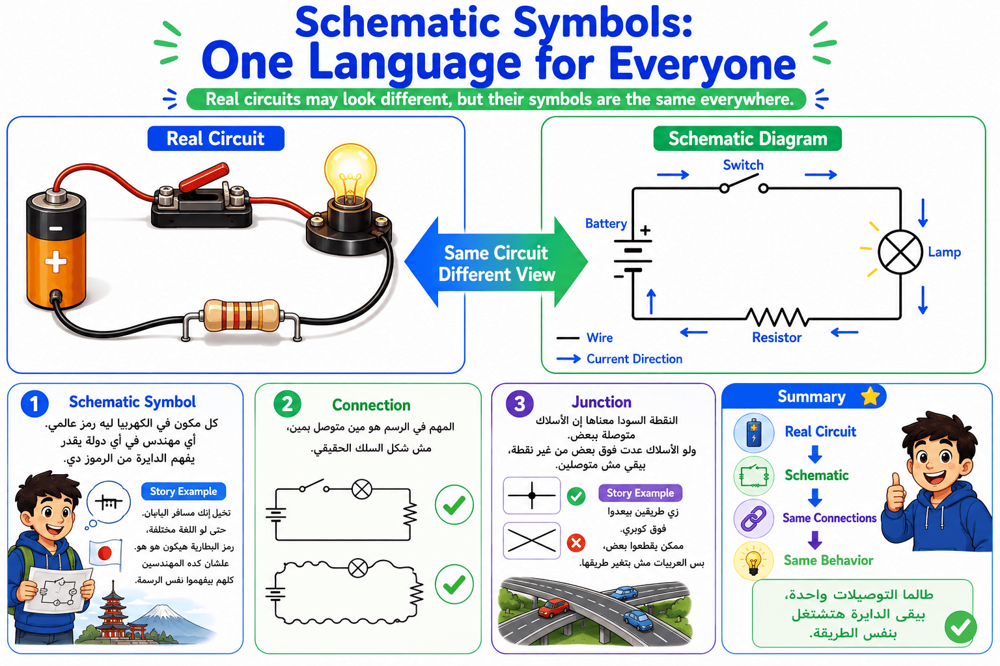
👨🏫
"دلوقتي فهمنا إن الـ Schematic مجرد رسم.
لكن هل كل واحد يرسم بالطريقة اللي تعجبه؟
أكيد لأ.
في رموز عالمية.
أي مهندس يشوفها يعرف معناها فورًا."
"أهم حاجة في الرسم مش شكل السلك.
ولا مكان اللمبة.
المهم مين متوصل بمين.
يعني ممكن نفس الدائرة تتترسم بألف شكل مختلف...
لكن طالما التوصيلات نفسها، يبقى الدائرة نفسها."
"كل مكون ليه رمز ثابت.
بطارية لها رمز.
مقاومة لها رمز.
مفتاح له رمز.
ولمبة لها رمز.
وده بيسهل التواصل بين المهندسين."
"الخطوط المستقيمة بتمثل الأسلاك.
ولو لقينا نقطة سوداء صغيرة...
يبقى السلكين متوصلين ببعض.
لو مفيش نقطة...
يبقى مجرد خطوط عدت جنب بعض."
"بصوا على الصورتين.
الشمال دائرة حقيقية والأسلاك ماشية في كل اتجاه.
اليمين نفس الدائرة لكن مرسومة بشكل مرتب.
الاتنين نفس الحاجة.
الاختلاف بس في طريقة العرض."
"افتكروا...
الرسم مش بيقول مكان المكونات.
الرسم بيقول مين متوصل بمين."
الترجمة: رمز
الشرح:
الرمز هو شكل بسيط يمثل مكونًا كهربائيًا بدل رسمه الحقيقي.
لما تشوف علامة الحمام في المول، مش محتاج يشوف صورة حمام حقيقية، مجرد الرمز بيكفي علشان تفهم المكان.
في برامج تصميم الدوائر مثل Proteus أو KiCad، المهندس يختار رمز البطارية أو المقاومة من المكتبة بدل رسمها بنفسه.
➡️ الانتقال
بعد ما عرفنا الرموز، لازم نعرف إزاي الأسلاك بتتوصّل بينها.
الترجمة: توصيل
الشرح:
هو الربط بين مكونين بحيث يقدر التيار ينتقل من واحد للتاني.
تخيل مجموعة أطفال ماسكين إيد بعض في سلسلة. لو واحد ساب إيد التاني، السلسلة كلها هتتفك.
لو نسيت توصل سلك بين البطارية واللمبة في مشروع إلكتروني، اللمبة مش هتشتغل مهما كانت البطارية جديدة.
➡️ الانتقال
بعد ما عرفنا قراءة المخططات والرموز، هنبدأ نتعلم القانون اللي يخلي المهندس يحسب التيار والجهد قبل ما يبني الدائرة.
"لو رسمتلك نفس الدائرة بشكل دائري ومرة بشكل مستطيل...
هل وظيفة الدائرة هتتغير؟ وليه؟"
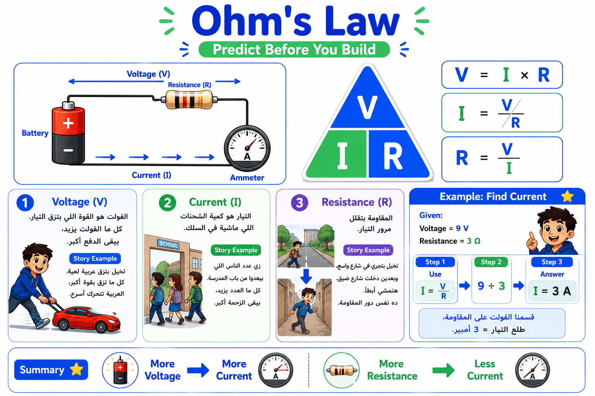
🎤 Speaker Notes👨🏫
"لحد دلوقتي عرفنا إن في 3 حاجات أساسية في أي دائرة كهربائية:
⚡ Voltage
⚡ Current
⚡ Resistance
لكن هل في علاقة بينهم؟
الإجابة: أيوه.
في قانون مشهور جدًا اسمه Ohm's Law.
وده يعتبر من أهم القوانين في الكهرباء والإلكترونيات، وأي حد هيشتغل Embedded Systems أو Robotics أو Electronics لازم يكون فاهمه."
👨🏫
"القانون بيقول:
V = I × R
يعني:
الجهد = التيار × المقاومة.
وده معناه إن أي اتنين نعرفهم، نقدر نحسب التالت."
V = I × R
"لو أنا عارف التيار والمقاومة...
أقدر أحسب الجهد."
I = V ÷ R
"ولو عارف الجهد والمقاومة...
أقدر أعرف التيار."
R = V ÷ I
"ولو عارف الجهد والتيار...
أقدر أعرف المقاومة."
👨🏫
"خلينا نطبق على المثال."
المعطيات:
Voltage = 9 V
Resistance = 3 Ω
والمطلوب...
احسب التيار.
"بما إن المطلوب Current...
يبقى هنستخدم القانون:
I = V ÷ R
نعوض بالأرقام.
9 ÷ 3
يساوي
3"
"يبقى التيار يساوي
3 Ampere
بكل بساطة."
👨🏫
"لاحظوا إننا محسبناش بطريقة معقدة.
إحنا بس اخترنا القانون المناسب وعوضنا."
"تخيل إنك هتركب دائرة إلكترونية فيها LED.
لو التيار كبير جدًا...
الـ LED هيتحرق.
ولو صغير جدًا...
مش هينور.
علشان كده المهندس بيحسب الأول باستخدام قانون أوم قبل ما يوصل أي حاجة."
"افتكروا القاعدة الذهبية:
أي اتنين معروفين...
يطلعوا التالت."
الترجمة: قانون أوم
قانون أوم هو القانون اللي بيربط بين الجهد والتيار والمقاومة.
هو بيساعدنا نتوقع سلوك الدائرة قبل ما نبنيها، وبالتالي نعرف إذا كانت هتشتغل صح ولا لأ.
تخيل إن عندك خرطوم مياه. لو ضغط المياه زاد، المياه هتمشي أسرع. لكن لو الخرطوم ضيق، هيقلل كمية المياه اللي بتمشي. نفس الفكرة في الكهرباء، لكن بدل المياه عندنا تيار كهربائي.
مهندس بيصمم روبوت صغير. قبل ما يوصل الموتور بالبطارية، بيستخدم قانون أوم علشان يتأكد إن التيار مناسب، لأن لو التيار عالي ممكن الموتور أو اللوحة الإلكترونية يتلفوا.
➡️ الانتقال
علشان نستخدم قانون أوم، لازم الأول نفهم الثلاث عناصر اللي بيتعامل معاها: الجهد والتيار والمقاومة.
الترجمة: الجهد الكهربائي
الجهد هو القوة اللي بتدفع الشحنات الكهربائية علشان تتحرك داخل الدائرة.
كل ما الجهد يزيد، يبقى الدفع أقوى.
تخيل إنك بتزق عربية لعبة. لو زقيتها بقوة بسيطة هتمشي شوية، لكن لو زقيتها بقوة أكبر هتمشي أسرع. الجهد هو "الزقة" دي.
بطارية 9V بتدي دفع أكبر من بطارية 1.5V، لذلك بعض الأجهزة تحتاج بطاريات بجهد أعلى علشان تشتغل.
➡️ الانتقال
بعد ما عرفنا مين بيدفع، نشوف مين اللي بيتحرك.
الترجمة: التيار الكهربائي
التيار هو كمية الشحنات الكهربائية اللي بتمشي داخل السلك كل ثانية.
تخيل إن مجموعة طلبة بيخرجوا من باب الفصل. كل ما عدد الطلبة اللي بيعدوا في الثانية يزيد، يبقى "التدفق" أكبر.
في روبوت بيتحرك بموتور، التيار هو اللي بيوصل الطاقة للموتور علشان يلف ويحرك الروبوت.
➡️ الانتقال
طيب لو في حاجة بتمنع الحركة؟ هنا ييجي دور المقاومة.
الترجمة: المقاومة الكهربائية
المقاومة هي الجزء اللي يقلل أو يحد من مرور التيار، علشان يحمي المكونات وينظم كمية الكهرباء.
تخيل إنك بتجري في ممر واسع، هتجري بسهولة. لكن لو الممر ضيق جدًا، هتضطر تبطأ. المقاومة بتعمل نفس الفكرة مع الكهرباء.
في دائرة فيها LED، بنضيف مقاومة قبل الـ LED علشان تمنع مرور تيار كبير يحرقه.
➡️ الانتقال
بعد ما فهمنا الجهد والتيار والمقاومة، بقينا نقدر نستخدم قانون أوم لحل أي مسألة بسيطة.
"لو البطارية 12V والمقاومة 6Ω...
مين يقدر يحسبلي التيار؟
(سيبوا الطلبة يحاولوا)
الإجابة:
I = 12 ÷ 6 = 2A."
Ohm's Law
│
┌─────────┼─────────┐
│ │ │
Voltage Current Resistance
الجهد التيار المقاومة
│ │ │
Push Flow Limits Flow
الدفع الحركة يقلل التيار
V = I × R
I = V ÷ R
R = V ÷ I
How Fast the Energy Is Delivered
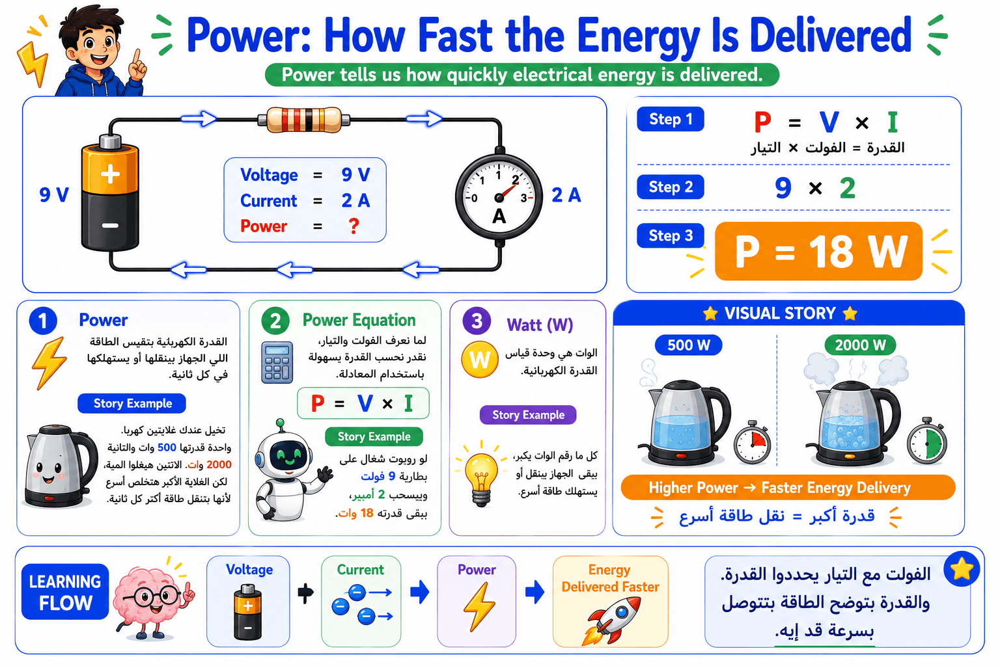
Power: How Fast the Energy Is Delivered
👨🏫 "لحد دلوقتي عرفنا إن الفولت بيدفع الشحنات، والتيار هو اللي بيمشي في السلك، والمقاومة بتقلل مرور التيار.
طيب دلوقتي هييجي سؤال مهم...
إحنا عرفنا الكهربا ماشية... بس ماشية بقوة قد إيه؟ أو الجهاز بياخد طاقة قد إيه؟
هنا بيظهر مصطلح جديد اسمه Power.
تخيلوا معايا إن عندكم اتنين شواحن موبايل.
الاتنين بيشحنوا نفس الموبايل... لكن واحد بيشحنه في ساعة، والتاني في أربع ساعات.
الاتنين وصلوا نفس الطاقة في الآخر، لكن واحد وصلها أسرع.
وده بالظبط معنى الـ Power.
الـ Power مش بتقول الطاقة كام... لكنها بتقول الطاقة بتتوصل بسرعة قد إيه.
الترجمة: القدرة الكهربائية
الشرح:
القدرة الكهربائية بتقيس معدل انتقال الطاقة.
يعني الجهاز بيستهلك أو بينقل طاقة بسرعة قد إيه في كل ثانية.
كل ما القدرة تزيد،
يبقى الجهاز بينقل أو يستهلك طاقة أسرع.
تخيل عندك غلايتين كهربا.
واحدة قدرتها 2000 Watt والتانية 500 Watt.
الاتنين هيغلو المية، لكن الغلاية 2000 وات هتخلص أسرع لأنها بتنقل طاقة
أكبر في كل ثانية.
تخيل روبوت بينضف الأرض.
لو الموتور قدرته أكبر، هيقدر يحرك الفرش بسرعة أكبر وينضف مساحة أكبر في
وقت أقل.
الانتقال
"دلوقتي عرفنا يعني إيه قدرة، السؤال بقى: نحسبها إزاي؟"
الترجمة: معادلة القدرة
الشرح:
لو إحنا عارفين الفولت والتيار،
يبقى نقدر بسهولة نحسب القدرة.
المعادلة هي:
P = V × I
يعني:
Power = Voltage × Current
لو عندك لمبة شغالة على 12 فولت وبتسحب 2 أمبير،
يبقى قدرتها:
12 × 2 = 24 Watt.
لو روبوت بيشتغل على بطارية 9V وبيسحب 2A،
يبقى الموتور بيستخدم:
18 Watt
وده يساعد المهندس يعرف البطارية هتكفي قد إيه.
الانتقال
"خلونا نجرب المثال الموجود في السلايد."
إحنا هنا عارفين:
Voltage = 9 V
Current = 2 A
هنطبق المعادلة:
P = V × I
يعني
9 × 2
= 18 Watt
يبقى الدايرة دي بتنقل قدرة مقدارها 18 وات.
❓ لو غيرنا الفولت من 9V لـ18V، والتيار فضل 2A...
تفتكروا القدرة هتبقى كام؟
(استنى إجابات الطلبة)
الإجابة:
36 Watt
Electricity
├── Voltage (V)
│ القوة اللي بتزق الشحنات
│
├── Current (I)
│ حركة الشحنات
│
├── Resistance (R)
│ تقلل مرور التيار
│
└── Power (P)
معدل انتقال الطاقة
Power Equation
P = V × I
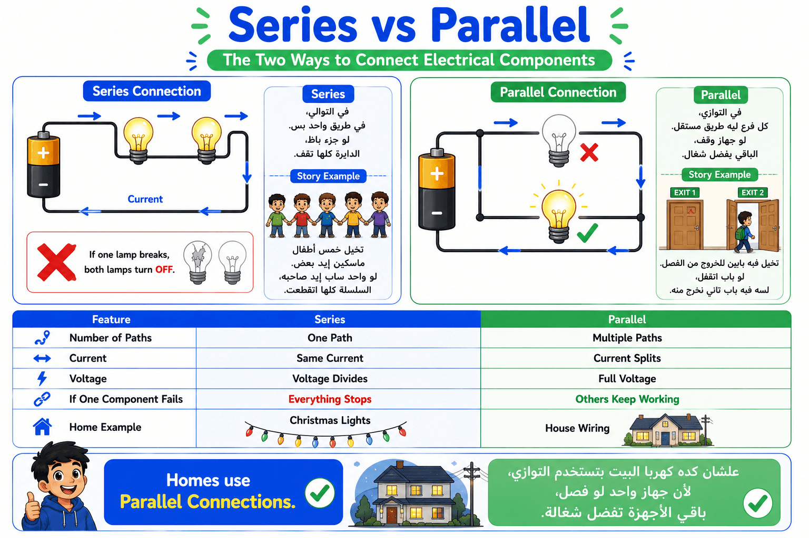
👨🏫
"لحد دلوقتي اتعلمنا إزاي التيار بيمشي في الدائرة، وإزاي نحسبه باستخدام قانون أوم.
دلوقتي هنتعلم إن المكونات الكهربائية ممكن تتوصل بطريقتين مختلفتين، وكل طريقة بتخلي الدائرة تشتغل بشكل مختلف.
الطريقتين دول اسمهم:
🔹 Series Connection
🔹 Parallel Connection
وده من أهم الدروس في الـ Embedded Systems، لأن أي جهاز إلكتروني تقريبًا بيستخدم واحدة من الطريقتين."
"في التوصيل على التوالي...
كل المكونات بتكون في طريق واحد فقط.
يعني التيار ملوش غير سكة واحدة يمشي فيها.
تخيلوا إنكم واقفين في طابور المدرسة.
كل واحد ورا التاني.
لو أول واحد وقف...
كل اللي وراه هيقف."
"في النوع ده...
كل المكونات بيعدي فيها نفس التيار.
لكن الجهد الكهربائي بيتقسم بينهم.
ولو عنصر واحد باظ...
الدائرة كلها هتقف."
"أما في التوصيل على التوازي...
كل عنصر ليه طريق خاص بيه.
يعني بدل شارع واحد...
بقى عندنا كذا شارع."
"وده معناه إن كل فرع بياخد الجهد كامل.
ولو جهاز باظ...
باقي الأجهزة تفضل شغالة."
👨🏫
"عشان كده...
بيوتنا كلها متوصلة Parallel.
تخيلوا لو كانت متوصلة Series.
أول لمبة تتحرق...
البيت كله يضلم 😂."
"افتكروا القاعدة دي:
Series → طريق واحد.
Parallel → أكتر من طريق."
الترجمة: التوصيل على التوالي
هو توصيل المكونات كلها في مسار واحد فقط، لذلك نفس التيار يمر في كل المكونات، وإذا انقطع المسار في أي نقطة تتوقف الدائرة بالكامل.
تخيل مجموعة أطفال ماسكين إيد بعض في صف واحد. لو طفل واحد ساب إيد زميله، السلسلة كلها هتتفك ومحدش هيقدر يكمل.
زمان بعض زينات الكريسماس كانت متوصلة على التوالي، ولما لمبة واحدة تتحرق كانت السلسلة كلها تطفي لأن المسار اتقطع.
➡️ الانتقال
لو حبينا نتجنب إن عطل واحد يوقف كل النظام، هنستخدم نوع تاني من التوصيل.
الترجمة: التوصيل على التوازي
في التوصيل على التوازي كل جهاز له فرع مستقل، لذلك كل فرع يحصل على نفس الجهد، وإذا حدث عطل في فرع واحد تستمر باقي الفروع في العمل.
تخيل مدرسة فيها أكثر من باب خروج. لو باب اتقفل، الطلبة يخرجوا من الأبواب التانية بدون مشكلة.
في البيت، لو لمبة الأوضة اتحرقت، التليفزيون والتكييف والأنوار في باقي الغرف يفضلوا شغالين لأنهم متوصلين على التوازي.
➡️ الانتقال
بعد ما فهمنا الفرق بين النوعين، هنشوف مقارنة سريعة تجمع كل الاختلافات في مكان واحد.
"لو اللمبة في أوضتك اتحرقت...
هل باقي البيت هيفصل؟
ليه؟"
https://chatgpt.com/s/m_6a5e89c598b081918f3fc7d2d6d88bef
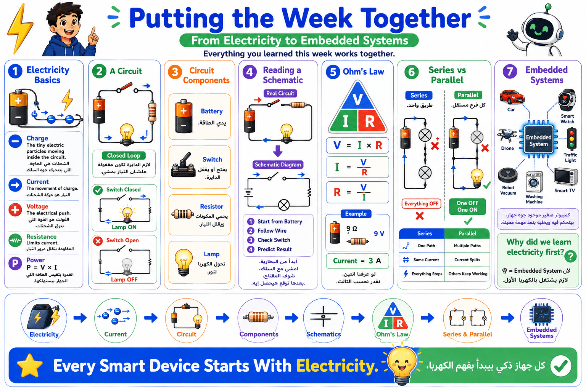
👨🏫
"السلايد دي تعتبر مراجعة لكل اللي اتعلمناه النهارده.
هنقارن بين Series و Parallel مرة واحدة."
"بصوا لأول صف.
في الـ Series...
في طريق واحد فقط.
أما في الـ Parallel...
في أكثر من طريق."
"في الـ Series...
نفس التيار بيمر في كل المكونات.
أما في الـ Parallel...
التيار بيتوزع على الفروع."
"في الـ Series...
الجهد بيتقسم بين المكونات.
أما في الـ Parallel...
كل فرع بياخد الجهد كامل."
"ودي أهم نقطة.
في الـ Series...
الدائرة كلها تقف.
أما في الـ Parallel...
الفرع اللي فيه المشكلة هو اللي يقف، والباقي يفضل شغال."
👨🏫
"دلوقتي لو حد سألك:
ليه كهرباء البيت Parallel؟
هتعرف تجاوب بسهولة.
علشان كل جهاز يشتغل لوحده، ولو جهاز حصل فيه عطل، باقي الأجهزة متتأثرش."
"خلونا نفتكر الرحلة اللي بدأناها:
بدأنا نفهم يعني إيه شحنة وتيار وجهد.
بعدها عرفنا البطارية بتشتغل إزاي.
اتعلمنا المكونات الأساسية للدائرة.
قرأنا الـ Schematic.
عرفنا قانون أوم.
وفي الآخر عرفنا طرق توصيل المكونات."
الترجمة: مسار
المسار هو الطريق الذي يسير فيه التيار الكهربائي داخل الدائرة.
تخيل إنك رايح المدرسة. لو فيه شارع واحد فقط، كل العربيات هتمشي فيه. لكن لو فيه أكثر من شارع، العربيات هتتوزع بينهم.
داخل روبوت صغير، ممكن الكهرباء يكون ليها أكثر من مسار علشان تغذي الموتور والحساسات في نفس الوقت.
➡️ الانتقال
بعد ما عرفنا المسار، نقدر نفهم ليه التيار والجهد بيتصرفوا بشكل مختلف في كل نوع من أنواع التوصيل.
الترجمة: فرع
الفرع هو جزء مستقل من الدائرة في التوصيل على التوازي، ويمكن أن يعمل حتى لو حدث عطل في فرع آخر.
تخيل شجرة كبيرة لها عدة فروع. لو فرع اتكسر، باقي الشجرة تفضل موجودة.
في لوحة تحكم ذكية، قد يكون هناك فرع لتشغيل الشاشة وفرع آخر لتشغيل الحساسات، وإذا تعطل أحدهما قد يستمر الآخر في العمل.
➡️ الانتقال
وبكده بقينا نعرف الفرق الكامل بين التوصيل على التوالي والتوصيل على التوازي.
"لو أنت مهندس وبتصمم كهرباء منزل...
هتختار Series ولا Parallel؟
وليه؟"
Embedded Systems
│
├── Electricity Basics
│ ├── Charge
│ ├── Current
│ ├── Voltage
│ ├── Resistance
│ └── Power
│
├── Battery
│
├── Circuit Components
│ ├── Battery
│ ├── Lamp
│ ├── Resistor
│ └── Switch
│
├── Reading Schematics
│
├── Ohm's Law
│ ├── V = I × R
│ ├── I = V / R
│ └── R = V / I
│
└── Connections
├── Series
└── Parallel
🎉 وبكده تكون خلصت أول جزء في رحلة الـ Embedded Systems.
وفي بداية الأسبوع القادم هيكون عند الطلبة أساس قوي جدًا يخليهم يفهموا ليه أي Microcontroller أو Arduino أو ESP32 محتاج الأول يفهم الكهرباء قبل البرمجة.
🎯 "دلوقتي هنطبق بإيدينا كل اللي اتعلمناه طول الأسبوع.
إحنا مش هنكتفي إننا نعرف يعني إيه Series ويعني إيه Parallel، لكن هنبني الاتنين بنفسنا ونقارن بينهم.
كل مجموعة هتستخدم برنامج PhET Circuit Construction Kit.
هتلاقوا عندكم بطارية 12 فولت، وأربع لمبات، وأسلاك، وAmmeter وVoltmeter.
المطلوب الأول إنكم تعملوا دائرة Series فيها الأربع لمبات ورا بعض.
بعد كده هنقيس:
قيمة التيار.
والفولت على لمبة واحدة.
بعدها هنفك نفس الدائرة ونبنيها Parallel.
ونقيس تاني.
في الآخر هنقارن:
ليه اللمبات شكلها اختلف؟
هل التيار هو هو؟
هل الفولت اتغير؟
الهدف مش إننا نحفظ الإجابة...
الهدف إننا نشوف الفرق بعيننا."
الترجمة: دائرة توصيل على التوالي
الشرح
في دائرة الـ Series
كل المكونات موجودة في طريق واحد.
يعني الكهرباء لازم تعدي عليهم كلهم بالترتيب.
لو أي جزء فصل...
الدايرة كلها تقف.
تخيل مجموعة أطفال واقفين في طابور واحد علشان يدخلوا
الفصل.
لو أول واحد وقف فجأة...
كل اللي وراه هيقف.
تخيل روبوت ماشي في ممر واحد.
لو حطيت صندوق في النص...
الروبوت مش هيعرف يكمل.
"طيب لو عملنا أكتر من طريق؟"
الترجمة: دائرة توصيل على التوازي
الشرح
في التوازي كل لمبة ليها طريق خاص بيها.
لو لمبة باظت...
الباقي هيشتغل عادي.
تخيل مدرسة فيها أربع أبواب.
لو باب اتقفل...
لسه باقي الأبواب شغالة.
تخيل أربع روبوتات.
كل واحد ماشي في شارع مختلف.
لو شارع اتقفل...
التلاتة الباقيين هيكملوا.
"دلوقتي عرفنا الفرق...
يلا نبنيهم بإيدينا."
❓
لو لمبة اتحرقت...
مين هيكمل يشتغل؟
Series؟
Parallel؟
Circuits
├── Series
│ One Path
│ Same Current
│ One failure stops all
│
└── Parallel
Multiple Paths
Full Voltage لكل فرع
باقي الفروع تستمر
🛠️ "دلوقتي هنشتغل خطوة بخطوة.
أول حاجة ابنوا دائرة Series.
يعني البطارية وبعدها الأربع لمبات ورا بعض في نفس المسار.
بعد ما تخلصوا...
حطوا الـ Ammeter وقيسوا قيمة التيار.
وبعدين استخدموا الـ Voltmeter علشان تقيسوا الفولت على لمبة واحدة.
بعد كده...
افصلوا الدائرة.
وابنوها Parallel.
كل لمبة في فرع لوحدها.
وبعدين قيسوا نفس القياسات مرة تانية.
آخر خطوة...
قارنوا النتائج.
اسألوا نفسكم:
مين كانت لمباته أنور؟
الفولت اتوزع إزاي؟
التيار اتغير ولا لأ؟
حاولوا تفسروا السبب بنفسكم قبل ما أسألكم."
أن يلاحظ الطلاب عمليًا الفرق بين Series وParallel.
يتأكد إن كل مجموعة بنت الـ Series صح.
يراجع القياسات.
يساعد فقط عند وجود مشكلة.
يطلب من كل مجموعة تفسير النتائج.
بناء الدائرتين.
القياس.
المقارنة.
المناقشة.
مجموعات من 3–4 طلاب.
20 دقيقة.
ابدأ بالسؤال:
"مين متوقع إن اللمبات هتبقى بنفس الإضاءة؟"
واسمح للطلبة يختلفوا.
بعدها خلوهم يكتشفوا الإجابة بنفسهم.
Build the Series Circuit.
Measure Current.
Measure Voltage.
Build the Parallel Circuit.
Measure Again.
Compare Results.
Explain Why.
| Item | Series | Parallel |
| Paths | One | Four |
| Brightness | Lower | Higher |
| Voltage on each bulb | Divided | Nearly Full Battery Voltage |
| If one bulb fails | All stop | Others continue |
| Observation | Less Bright | Brighter |
🧩 "المرة دي هننتقل لمستوى أصعب شوية.
في النشاط الأول كنا بنقارن بين Series وParallel كل واحد لوحده.
لكن في الحقيقة أغلب الدواير الإلكترونية الحقيقية بتستخدم الاتنين مع بعض.
وده اسمه Combined Circuit أو دائرة مركبة.
المطلوب منكم إنكم تبنوا نفس الدائرة الموجودة في الـ Schematic باستخدام برنامج PhET.
لكن بدل أجهزة القياس A1 وA2 وA3 هنستخدم لمبات L1 وL2 وL3.
هتلاحظوا إن جزء من الدائرة عبارة عن مسار رئيسي، وبعد كده الدائرة بتتفرع لفرعين.
وده شبه اللي بيحصل في بيوتكم أو في أجهزة إلكترونية كتير.
الهدف هنا مش السرعة...
الهدف إن كل توصيلة تكون صح، لأن أي سلك في مكان غلط هيغير نتيجة الدائرة كلها."
الترجمة: دائرة كهربائية مركبة
الشرح
هي دائرة بتجمع بين التوصيل على التوالي والتوصيل على التوازي في نفس الوقت.
وده النوع الأكثر استخدامًا في الأجهزة الحقيقية.
تخيل طريق رئيسي في مدينة، وبعده يتفرع لشوارع جانبية توصل لأماكن مختلفة.
في البداية كل العربيات ماشية في نفس الطريق، وبعدها كل واحدة تدخل شارع مختلف.
تخيل داخل جهاز كمبيوتر.
الكهرباء تخرج من مصدر واحد، ثم تتوزع لتغذي الشاشة، والمعالج، والمراوح في مسارات مختلفة.
"طيب علشان نبنيها صح، لازم نمشي بالترتيب."
الترجمة: المسار الرئيسي
الشرح
هو أول جزء في الدائرة، وكل التيار بيمر فيه قبل ما يبدأ يتفرع.
زي الطريق الرئيسي اللي كل العربيات لازم تعدي منه قبل ما تدخل الشوارع الجانبية.
زي كابل الكهرباء الرئيسي اللي خارج من مزود الطاقة داخل الكمبيوتر.
"بعد المسار الرئيسي، الدائرة هتبدأ تتفرع."
الترجمة: فرع
الشرح
هو طريق مستقل داخل الدائرة يسمح بمرور التيار في مسار مختلف.
تخيل مول كبير فيه أكتر من مدخل للمحلات.
كل شخص يختار الطريق اللي يناسبه.
في شبكة إنارة ذكية، كل غرفة تعتبر فرع مستقل.
❓
لو نسيت أوصل سلك واحد في أحد الفروع...
هل هتشتغل الدائرة زي ما هي؟
ولا هيظهر عندنا مشكلة؟
🛠️ "علشان منتلخبطش، هنبني الدائرة خطوة بخطوة.
أول خطوة...
هنبني المسار الرئيسي.
يعني البطارية، وبعدها L1، وبعدها R1، وبعدها R2.
لحد هنا مفيش أي تفرعات.
بعد كده...
هنضيف أول فرع.
هيكون فيه L2 مع R3.
وبعدين الفرع التاني.
هيكون فيه R4 مع L3.
وفي الآخر نتأكد إن كل الأسلاك متوصلة كويس وإن الدايرة مقفولة.
افتكروا...
في الدواير الكهربائية، ترتيب التوصيل مهم جدًا.
أي سلك في مكان غلط ممكن يخلي النتيجة كلها مختلفة."
يتعلم الطلاب كيفية بناء دائرة مركبة من مخطط كهربائي.
مراجعة كل خطوة قبل الانتقال للخطوة التالية.
التأكد من اتجاه التوصيلات.
مساعدة الطلاب في قراءة الـ Schematic وليس إعطاؤهم الحل مباشرة.
اتباع خطوات البناء.
مراجعة كل توصيلة.
تشغيل الدائرة.
ملاحظة النتائج.
3–4 طلاب لكل مجموعة.
25 دقيقة.
اسأل كل مجموعة:
"لو شيلنا فرع كامل... إيه اللي هيحصل لباقي الدائرة؟"
Build the Main Line.
Add Branch 1.
Add Branch 2.
Check Every Connection.
Run the Circuit.
Compare Your Result with the Schematic.
Battery (24 V)
↓
L1
↓
R1 (110 Ω)
↓
R2 (110 Ω)
↓
Branch Point
L2
↓
R3 (180 Ω)
↓
Return
R4 (220 Ω)
↓
L3
↓
Return
✅ Main line is connected first.
✅ Two independent branches are created.
✅ Current splits after the branch point.
✅ Each branch carries part of the total current.
✅ If one branch is disconnected, the remaining branch can still operate (depending on the exact connection shown in the schematic).
Battery (24 V)
│
Main Line
├── L1
├── R1
├── R2
│
├── Branch 1
│ ├── L2
│ └── R3
│
└── Branch 2
├── R4
└── L3